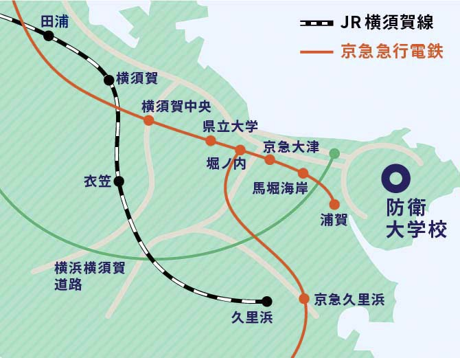
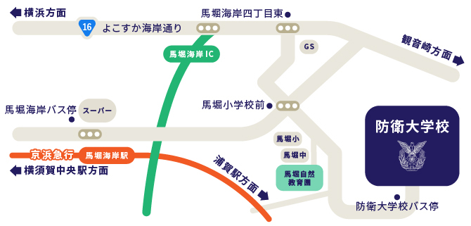
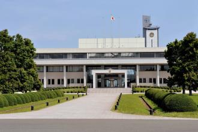
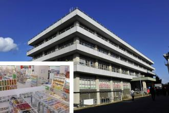
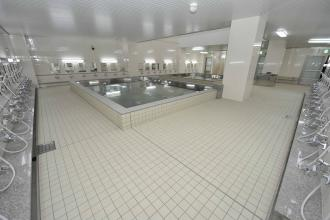

| 所在地 | 〒239-8686 神奈川県横須賀市走水1丁目10番20号 | ||||||||||||||||||||||
|---|---|---|---|---|---|---|---|---|---|---|---|---|---|---|---|---|---|---|---|---|---|---|---|
| 地図 |   | ||||||||||||||||||||||
| 交通機関のご案内 | 京浜急行電鉄「馬堀海岸駅」下車 （「堀ノ内駅」にて浦賀行きに乗換え） 京浜急行バス「小原台ホテル行き」約6分、または徒歩で約25分 JR横須賀線「横須賀駅」下車 (「東京駅」より約75分) 京浜急行バス「小原台ホテル行き」約30分 横浜横須賀道路 「馬堀海岸インター」降車、約5分 |
||||||||||||||||||||||
| 各部署内線番号 |
総務部
教務部
訓練部
先端学術推進機構
総合情報図書館
|
| コンビニ | 

学生会館と本館内にあります。 |
大浴場 |  |
|---|